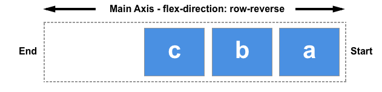
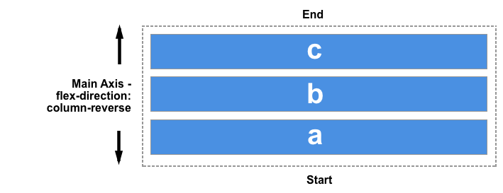

Introducción
Flex es uno de los nuevos valores HTML5 para propiedad CSS display, que nos permite maquetar nuestras páginas web de una manera mucho más fácil de lo que se hacía con la forma tradicional, en la que utilizábamos propiedades como float o position, entre
otras.
Estructura de Flex
Cuando trabajamos con flexbox necesitamos pensar en términos de dos ejes — el eje principal y el eje cruzado. El eje principal está definido por la propiedad flex-direction, y el eje cruzado es perpendicular a este. Todo lo que hacemos con
flexbox está referido a estos dos ejes, por lo que vale la pena entender cómo trabajan desde el principio.
Eje Principal
El eje principal está definido por flex-direction, que posee cuatro posibles valores:
| Elemento |
Foto Representativa |
| row |
Con row los elementos se situan en fila de izquierda a derecha. |
| row-reverse |
Con row-reverse los elementos se situan en fila de derecha a izquierda. |
| column |
Con row-reverse los elementos se situan en columna de arriba a abajo. |
| column-reverse |
Con column-reverse los elementos se situan en columna de abajo a arriba. |
Eje cruzado
El ejecruzado va perpendicular al principal, por tanto, si tenemos de eje principal row (filas), el eje cruzado ira por las columnas(columnas).

Si tenemos de eje principal column(columnas), el eje cruzado ira por las rows(columnas).

Flex Wrap
La propiedad flex-wrap controla si el contenedor flexible es de una o varias líneas , y la dirección del eje transversal , que determina la dirección en la que se apilan las nuevas líneas.
En el ejemplo de abajo tenemos asignado en los contenedores rojos nowrap, en los amarillos wrap y en los azules wrap-reverse.
See the Pen
qBEWoBp by javijambo (@javijambo)
on CodePen.
Como vemos los bloques rojos intentan ocupar todo el espacio posible ajustando el tamaño de los bloques para poder colocarlos todos en la misma linea, los amarillos se ajustan al contenedor y los azules se ajustan al contenedor desde abajo.
Flex Flow
Flex flow es una manera para combinar flex direction y flex wrap para ahorrarnos codigo y trabajo. Indicamos en el primer valor el flex direction y en el segundo el wrap que queramos
See the Pen
ExaYEPw by javijambo (@javijambo)
on CodePen.
El azul tiene flex-direction y wrap y el rojo tiene puesto flex-flow
Justify-Content
Justify content define el alineamiento a partir del eje principal
| Elemento |
Descripción |
| flex-start(defualt) |
Los elementos estan alineados al inicio de la linea.(Color rojo) |
| flex-end |
Los elementos estan alineados al final de la linea(Color amarillo) |
| center |
Los elementos estan alineados en el centro de la linea(Color azul) |
| space-between |
Los elementos estan alineados equitativamente en la linea con el primer elemento al principio de la linea y el ultimo al final de la linea(Color verde) |
| space-around |
Los elementos están distribuidos de forma que tengan el mismo espaciado entre ellos (Color rosa) |
| space-evenly |
Los elementos estan alineados de manera que el espacio de atras al elemento anterior y el espacio de delante del elemento siguiente sea el mismo(Color negro) |
See the Pen
wvBwmJv by javijambo (@javijambo)
on CodePen.
Mas Información
Aqui dejo links de interés para más informacion en detalle de elementos de bootstrap:
Link